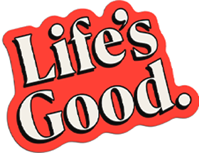
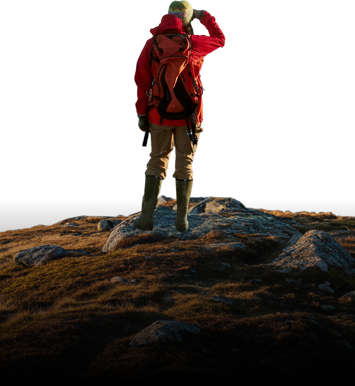
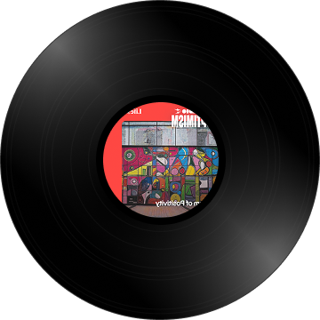
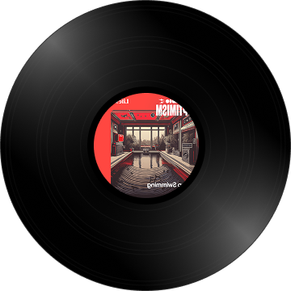
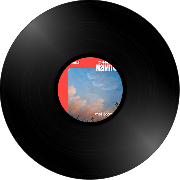

MAKE A SONG AND SOMEONE'S DAY



Scroll down
We scroll, swipe, and tap "likes" every day.
But are we really connecting with each other?
Perhaps what we need are heart-to-heart connections.

It's why we're bringing our “Life’s Good“ message through the universal language of music.
Create a tune for your someone special with LG Radio Optimism.
It’s easy. Think of someone special and put in a few words about them.
Watch the unique song comes to life, ready to be shared with a smile.


The moment you make a heartfelt song for someone, and the moment you receive one from someone special, that's when a real connection lets us truly experience Life's Good.
Listen more stories. Feel more optimism.
Songs made just for you









Learn about Life's Good